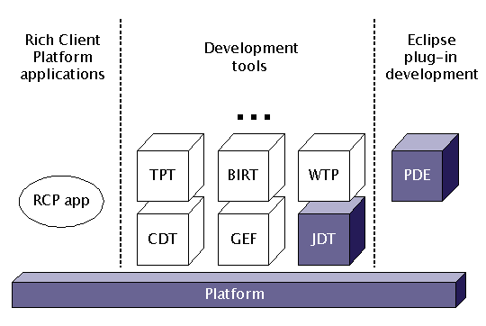
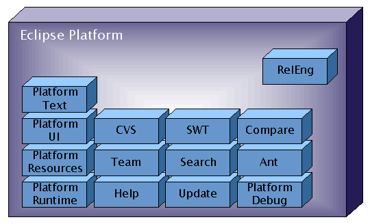
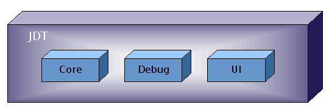
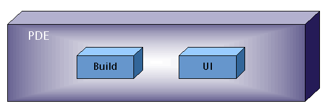

The Eclipse Platform top level project is responsible for three subsystems: Platform, JDT, and PDE. There is a separate project for each subsystem, but these projects closely coordinate their development activities and provide unified releases and downloads.
|
 Figure 1. Eclipse Platform top level project is structured into 3 subsystems; Platform subsystem is used universally. |
The following table summarizes what each of the subsystems do.
| Name | Summary |
|---|---|
| Platform | The Eclipse Platform subsystem consists of essential core infrastructure and UI frameworks that form the nucleus of the IDE and other RCP applications. The notions of plug-in, extension point, workspace, and workbench are all defined by the Eclipse Platform. |
| JDT | The JDT (Java Development Tools) subsystem consists of integrated tools for developing, testing, and debugging Java (J2SE) applications. |
| PDE | PDE (Plug-in Development Environment) consists of integrated tools that assist in developing, testing, debugging, and packaging Eclipse plug-ins, features, products, and update sites. |
There are two current releases of the 3 subsystems in the Eclipse Platform:
The 3 subsystems in this top level project are developed, built, and released as a unit (same release schedule, shared downloads, etc.).
The Eclipse Platform subsystem provides the essential core infrastructure and UI frameworks that form the nucleus of the IDE and other RCP applications. The notions of plug-in, extension point, workspace, and workbench are all defined by the Eclipse Platform.
The term "Eclipse Platform project" could refer to either the Eclipse Platform top level project as a whole or to the (sub)project responsible for developing the Eclipse Platform subsystem. The ambiguity is usually harmless.
|
 Figure 2. Components making up Eclipse Platform subsystem. |
The Eclipse Platform subsystem has a number of components split along functional line and designed to work in concert. Unlike other component, the Releng component is not actually part of Eclipse Platform distributions; rather, it contains the specialized scripts and tools used to build those distributions.
There are two important aspects that cross-cut the decomposition into components: Core/UI, and RCP/IDE. "Core" components are ones that have no GUI dependencies. Core components can be used in headless configurations. "UI" components are ones that require a GUI, and therefore cannot be used in headless configurations. This stratifies the components into Core and UI layers, with components in the core layer depending only on other component in the core layer. Several components have both Core and UI sides to them (e.g., Platform Debug); within them, their plug-ins are split up along Core and UI lines (e.g., org.eclipse.debug.core and org.eclipse.debug.ui).
The Eclipse Platform subsystem serves as both the base for IDE and non-IDE products. The Rich Client Platform (RCP) is the name used for those parts of the Eclipse Platform that are useful for writing arbitrary application programs based on Eclipse. Some components have both RCP and IDE sides to them (e.g., Platform UI); within them, their plug-ins are split up along RCP and IDE lines (e.g., org.eclipse.ui and org.eclipse.ui.ide).
There are two current releases of the 3 subsystems in the Eclipse Platform. There are downloads for the Platform subsystem by itself as well as ones that bundle all 3 subsystems together (there are also separate RCP and SWT drops).
All subsystems in the Eclipse Platform top level project are developed, built, and released as a unit (same release schedule, shared downloads, etc.).
The Platform subsystem is broken down into components. (For historical reasons, each component operates much like a project unto its own, with its own set of committers, bug categories, and development team mailing lists.) Follow the component links to get detailed information about the component (including where to find source code, mailing list for communication within the development team).
| Name | Summary |
|---|---|
| Platform Runtime (historically Core) | The Platform Runtime component is the base of the Eclipse platform and implements the fundamental concepts of plug-ins and extension points, built atop an implementation of OSGi. The Platform Runtime also provides low-level facilities for managing things like concurrency, preferences, and content types. |
| Platform Resources (historically Core) | The Platform Resources component provides the basic notions of workspaces and projects for managing files in the local file system. It provides domain-independent mechanisms for creating, manipulating, and tracking these resources. |
| SWT | SWT is a widget toolkit for Java designed to provide efficient, portable access to the user-interface facilities of the operating systems on which it is implemented. In addition to the primary focus on native integration, the SWT component provides the custom controls that give Eclipse its distinctive look and feel. |
| Ant | The Ant component integrates Ant into Eclipse. It includes an Ant buildfile editor and mechanisms for configuring and executing Ant builds. |
| Compare | The Platform Compare component provides infrastructure for differencing and merging hierarchical structures and sequences of arbitrary objects, such as text lines, words, or characters. It also provides various UI elements (editors, views, dialogs) for navigating and merging differences. |
| Platform Debug | The Platform Debug component provides frameworks and APIs for building integrated debuggers in Eclipse. It includes both debug model infrastructure and a basic debugger UI that can be extended to define specific debuggers. It also includes a general framework for launching programs from an IDE. |
| Help | The Platform Help component provides mechanisms for integrating documentation and context-sensitive help. Besides providing on-line help in the workbench, it can also be deployed as a stand-alone desktop help system or as an infocenter server that can be accessed remotely through any web browser. |
| Search | The Search component defines the mechanisms for integrating search functionality into the workbench. It contributes textual searching, together with the UI infrastructure and building blocks for creating content-type-specific searches. |
| Platform Text | The Platform Text component provides the facilities for manipulating and managing text files and documents. It contributes Eclipse's default text editor, together with the frameworks and building blocks for creating domain-specific text editors. |
| Platform UI | The Platform UI component supplies the workbench that provides the overall structure and presents an extensible user interface to the user. Some of the Platform APIs, frameworks, and building blocks are specific to Eclipse-based IDEs; most are available to all RCP applications. |
| Update | The Update component manages the configuration of installed plug-ins. It provides the mechanisms for discovering, downloading, and installing new and updated plug-ins. |
| Team | The Team component provides mechanisms for integrating version control tools that manage and track changes to files in a project. |
| CVS | The CVS component integrates CVS into Eclipse, allowing the various versions of files in a project to be tracked and managed though a shared, remote CVS repository. In addition to supporting the traditional CVS commands, it also lets the user preview and visually merge changes between workspace and repository. |
| Platform Releng | The Platform Releng component provides the specialized tools and Ant-based automated processes used to build Eclipse Platform project distributions for download. |
The JDT (Java Development Tools) subsystem consists of integrated tools for developing, testing, and debugging Java (J2SE) applications. The JDT project is managed as part of the Eclipse Platform top level project.
|
 Figure 3. Components making up JDT subsystem. |
The JDT Core component defines the non-UI infrastructure for compiling and analyzing Java code. The JDT UI component provides the user interface elements (wizards, views, editors) and infrastructure for editing, refactoring, browsing, and searching Java code. The JDT Debug component handles everything related to running and debugging Java programs.
There are two current releases of the 3 subsystems in the Eclipse Platform. There are downloads for the JDT subsystem by itself as well as ones that bundle it with the Platform.
All subsystems in the Eclipse Platform top level project are developed, built, and released as a unit (same release schedule, shared downloads, etc.).
The JDT subsystem is broken down into components. (For historical reasons, each component operates much like a project unto its own, with its own set of committers, bug categories, and development team mailing lists.) Follow the component links to get detailed information about the component (including where to find source code, mailing list for communication within the development team).
| Name | Summary |
|---|---|
| JDT Core | The JDT Core component provides the Java-specific infrastructure of the Java IDE. It includes an incremental Java compiler and Java-centric models for navigating, analyzing, searching, and manipulating Java projects and source files. |
| JDT Debug | The Java Debug component provides an integrated Java debugger that supports debugging of Java programs running (either locally and remotely) on Java virtual machines with JDPA support. |
| JDT UI | The JDT UI component implements the user interface of the Java IDE. It includes the UI elements and infrastructure for editing, refactoring, browsing, and searching Java code. |
PDE (Plug-in Development Environment) provides a set of integrated tools that assist in developing, testing, debugging, and packaging Eclipse plug-ins, features, products, and update sites. The PDE project is managed as part of the Eclipse Platform top level project.
|
 Figure 4. Components making up PDE subsystem. |
Most of the functionality is provided by the PDE UI component, which has the various special-purpose editors, views, and wizards for developing plug-ins. The PDE Build component has the low level mechanisms for generating Ant-based scripts for building and packaging plug-ins.
There are two current releases of the 3 subsystems in the Eclipse Platform. PDE is bundled with Platform and JDT.
All subsystems in the Eclipse Platform top level project are developed, built, and released as a unit (same release schedule, shared downloads, etc.).
The PDE subsystem is broken down into components. (For historical reasons, each component operates much like a project unto its own, with its own set of committers, bug categories, and development team mailing lists.) Follow the component links to get detailed information about the component (including where to find source code, mailing list for communication within the development team).
| Name | Summary |
|---|---|
| PDE Build | The PDE Build component generates automated Ant scripts for fetching, building, and packaging OSGi bundles, plug-ins, and features. |
| PDE UI | The PDE UI component provides integrated tools for developing, testing, debugging, and packaging Eclipse-specific artifacts including plug-ins, features, products, and update sites. |